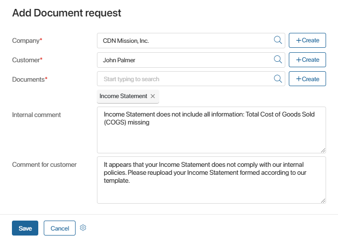
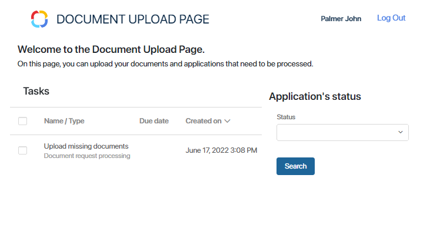
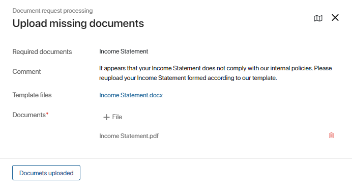
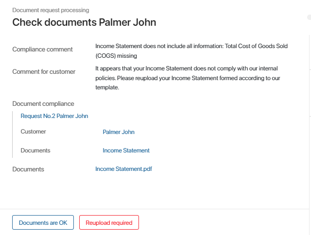

The Document compliance app allows you to request documents from customers in case of compliance issues. The app includes the Document request processing business process that starts when a new document request is created in the system.
Make sure you perform the initial steps before you use this solution. Otherwise, the business process will not work correctly.
Let’s consider which steps Document request processing includes.
Create a Document request
If some of the customer’s documents are missing or invalid, an employee can make a Document request. To create a new request, open the Document compliance app. In the upper right corner of the page, click the +Document request button:
The request creation form will open:

Select the Company* and the Customer* from the apps of the CRM workspace. Specify which documents the customer needs to add or reupload. In the Internal comment field, you can leave a comment to the request that will only be available to the company’s employees. In the Comment for customer field, you can specify what needs to be changed or added. When you fill out the information, click Save.
When a new Document request is added to the system, the Document request processing business process starts. Below you can find the description of tasks included in the process in the order they’re assigned.
Unlock the external user
The task to Unlock the external user is assigned to the Customer service team member if the customer’s account is locked.
Read about unlocking external users in the Lock an external user article.
When the user is unlocked, the employee needs to open the task form and click the Done button. A notification will be automatically sent to the customer’s email. The customer will be able to log in to the Service Portal to upload the documents.
Contact the customer
If the customer doesn’t have an external user account, the Customer service team member gets the task to contact them. The customer needs to be informed about being registered on the Service Portal and receiving a Document request there.
If the Customer service team member cannot reach the customer, they need to click No response. The task will be assigned again in three hours.
When the employee contacts the customer, they need to click Contacted. The customer will receive an email with the personal invitation link and template files for the documents that need to be added or reuploaded.
Add the requested information and documents
When an employee makes a document request, the customer is assigned the task to upload the necessary information on the Service Portal. The customer gets an email informing them that additional documents need to be added. Templates for the documents that need to be uploaded are attached to the email. They are also available on the portal.
If the customer hasn’t been registered as an external user in the company, the email includes a personal invitation link. To activate the external user account, the customer needs to click the link, enter their name, and set the password.
When the customer logs in to the portal, the Document Upload Page opens. On the left, the tasks are displayed. If the customer submitted any applications, they are shown on the right.

To upload the requested documents or add missing data, the customer needs to click on the Upload missing documents task in the list on the left. It may be needed to reload the page for the task to appear in the list.

The names of the requested documents are shown in the Required documents field. The form also includes the compliance manager’s comment and the template files. The customer needs to upload the documents complying with the attached templates to the Documents* field and click the Documents uploaded button at the bottom of the form. The data will be checked for compliance issues again.
Check the reuploaded documents
When the customer reuploads documents, the Customer service team member gets the task to check whether they comply with the corresponding templates.

On the task from, the employee sees the internal Compliance comment, the Comment for customer, and all information about the request. The documents that the customer uploaded are available in the Documents field.
The employee can complete the task by clicking on one of the following buttons:
- Documents are OK. The request will be assigned the Done status. The customer will receive an email informing that no compliance issues have been found in the uploaded documents.
- Reupload required. The customer will receive an email informing them that the documents need to be reuploaded. The task on the Service Portal will be assigned again. The employee needs to leave a comment.
When the Customer service team member clicks Documents are OK, the employee who created the Document request is assigned the task to check the documents as well.
After checking the documents, the employee can click one of the following buttons:
- Reupload required. The customer will receive an email informing them that the documents need to be reuploaded. The task on the Service Portal will be assigned again.
- Close the ticket. The Document request processing business process will end.
Found a typo? Select it and press Ctrl+Enter to send us feedback